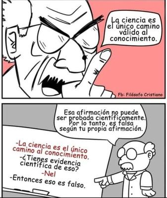

En redes sociales circula con frecuencia la siguiente afirmación, presentada como si fuera una objeción filosófica profunda: «Decir que la ciencia es el único camino al conocimiento es una afirmación falsa, porque no puede ser probada científicamente según esta misma afirmación». En otras palabras, según ellos, al decir que «La ciencia es el único camino válido al conocimiento», se incurre en la falacia lógica de la autocontradicción, ya que, al no poder probarse científicamente, la afirmación se invalida a sí misma».


Y a esto suelen añadir otros argumentos: Que la ciencia explica la existencia de «Dios», «porque tanto la física y cosmología afirman que el universo tuvo un inicio, y que está exquisitamente afinado para la vida», además de que los ateos creemos que la ciencia puede eliminar la existencia de «Dios», simplemente porque nos explica cómo funciona el universo, pero que con ese razonamiento cometemos un error lógico (falacia non sequitur), ya que «esto es similar a afirmar que simplemente porque sabemos cómo funciona el motor de combustión interna, ya no tenemos necesidad de creer que Henry Ford existe». Incluso afirman los creyentes que «la ciencia no puede ni nunca podrá eliminar la existencia de Dios, porque la ciencia trabaja con causas físicas, mientras que Dios es una entidad metafísica, aunque su existencia puede ser detectada (en parte) por sus efectos en el mundo físico».
Pues bueno, resulta que desde una perspectiva epistemológica todos estos razonamientos son defectuosos. Comencemos por el primer punto: la afirmación de que la ciencia es el único camino fiable (o, más precisamente, el mejor) para conducirnos al conocimiento de la realidad. Aclaremos que esta no es una hipótesis científica, sino una tesis epistemológica. Lo que pasa es que aquí hay una confusión fundamental entre niveles de discurso, porque mientras la ciencia es un método empírico para estudiar fenómenos del mundo natural, la epistemología es la disciplina que reflexiona sobre cómo justificamos nuestras creencias, y por qué consideramos que ciertos métodos producen conocimiento fiable. Por lo que exigir que una tesis epistemológica sea «probada científicamente», es cometer un error categorial: sería como pedir que las reglas de la lógica se demuestren con un experimento de laboratorio.
Por otra parte, la tesis no se sostiene dogmáticamente. Nosotros nunca afirmamos, con una cosmovisión cerrada, que la ciencia lo explica todo, sino que la ciencia, comparada con otras vías propuestas —revelación, fe, intuición mística, autoridad religiosa—, es el único método que históricamente ha demostrado producir conocimiento intersubjetivo, autocorrectivo y predictivo. Su superioridad epistemológica se justifica comparativamente, no por un acto de fe. Por tanto, el supuesto «autodisparo en el pie» la supuesta falacia de autocontradicción, es una ilusión retórica, no una refutación real.
Pasemos ahora a la idea de que la ciencia, especialmente la física y la cosmología, explicaría o confirmaría la existencia de «Dios», porque el universo tuvo un inicio y está «exquisitamente afinado». Este argumento se apoya en una interpretación incorrecta de la cosmología moderna. La teoría del Big Bang no afirma que el universo surgiera de la nada, ni que haya sido creado por una inteligencia. Describe sólo la expansión del universo desde un estado extremadamente caliente y denso, pero ya existente. Cuando retrocedemos matemáticamente en el tiempo, nuestros modelos conducen a una «singularidad», es decir, a un punto donde las ecuaciones dejan de ser aplicables. Pero esa singularidad no es una evidencia de no existencia, ni una evidencia de creación, sino solamente el límite del conocimiento físico actual. Y confundir un límite teórico con una prueba de «Dios», es una forma de argumento desde la ignorancia.
Algo similar ocurre con el llamado «ajuste fino». El hecho de que ciertas constantes físicas permitan la existencia de estructuras complejas no implica diseño. Existen explicaciones alternativas perfectamente naturales: selección antrópica, modelos de multiverso, o simplemente el reconocimiento honesto de que aún no conocemos el origen de esas constantes. Introducir a «Dios» como explicación no añade poder explicativo, no genera predicciones nuevas y no puede ser falsado. Por eso, tanto el Diseño Inteligente como el Ajuste Fino, tal como los presentan los creyentes, no son ciencia, sino pseudociencia: hipótesis ad hoc que rellenan huecos con causas sobrenaturales.
Y el otro reproche habitual es que los ateos creemos que la ciencia «elimina a Dios» simplemente por explicar cómo funciona el universo, y que esto sería una falacia non sequitur. En parte, es cierto que explicar un fenómeno no implica, por sí solo, refutar todas las creencias asociadas a él. Pero aquí se construye nuevamente un hombre de paja. El ateísmo filosófico no sostiene que «Dios» desaparezca mágicamente porque entendamos una ecuación, sino que a medida que los fenómenos antes atribuidos a lo divino reciben explicaciones naturales suficientes, la hipótesis de «Dios» se vuelve innecesaria y redundante. Eso no es un non sequitur, sino una aplicación legítima del principio de parsimonia.
Y la analogía del creyente del motor de combustión y Henry Ford es especialmente engañosa. Ford es una entidad histórica cuya existencia se verifica mediante documentos, testimonios, registros y restos materiales. «Dios», en cambio, es una entidad metafísica propuesta sin evidencia independiente comparable. Saber cómo funciona un motor no elimina a Ford, porque Ford no fue inventado para explicar el funcionamiento del motor. «Dios», en cambio, sí ha sido históricamente utilizado como explicación de fenómenos naturales. Y cuando esas explicaciones fallan, la analogía se derrumba.
Finalmente, los creyentes afirman que la ciencia no puede ni podrá eliminar la existencia de «Dios», porque la ciencia trata con causas físicas, mientras que «Dios» es una entidad metafísica, aunque detectable «en parte» por sus efectos en el mundo físico. Pero esta postura es internamente incoherente. Si «Dios» tiene efectos reales en el mundo físico —milagros, intervención, diseño, respuestas a oraciones—, entonces entra automáticamente en el ámbito de la investigación científica. Si no tiene efectos detectables, entonces no hay ninguna razón epistemológicamente válida para creer en él. Pretender relevancia causal y, al mismo tiempo, inmunidad al escrutinio empírico, es una estrategia de evasión, no un argumento sólido.
En conclusión, la ciencia no es una religión ni una cosmovisión total, pero sigue siendo el único método que ha demostrado producir conocimiento fiable sobre la realidad. Sus límites no legitiman la fe ni justifican a «Dios»; sólo marcan la frontera entre lo que sabemos, lo que aún ignoramos y lo que algunos prefieren llenar con certezas imaginarias. La ignorancia honesta es intelectualmente más digna, que una explicación sobrenatural disfrazada de profundidad filosófica.
[Godless Freeman]
[Crédito de imagen: Sociedad De Filosofía Aplicada]
Comentarios
Comments powered by Disqus